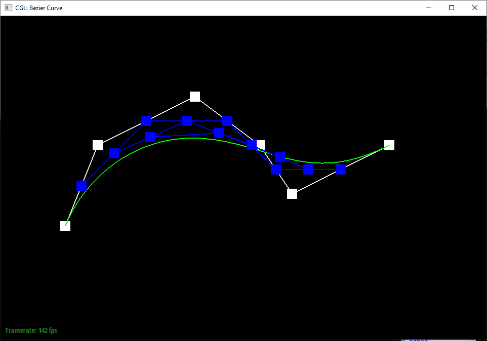
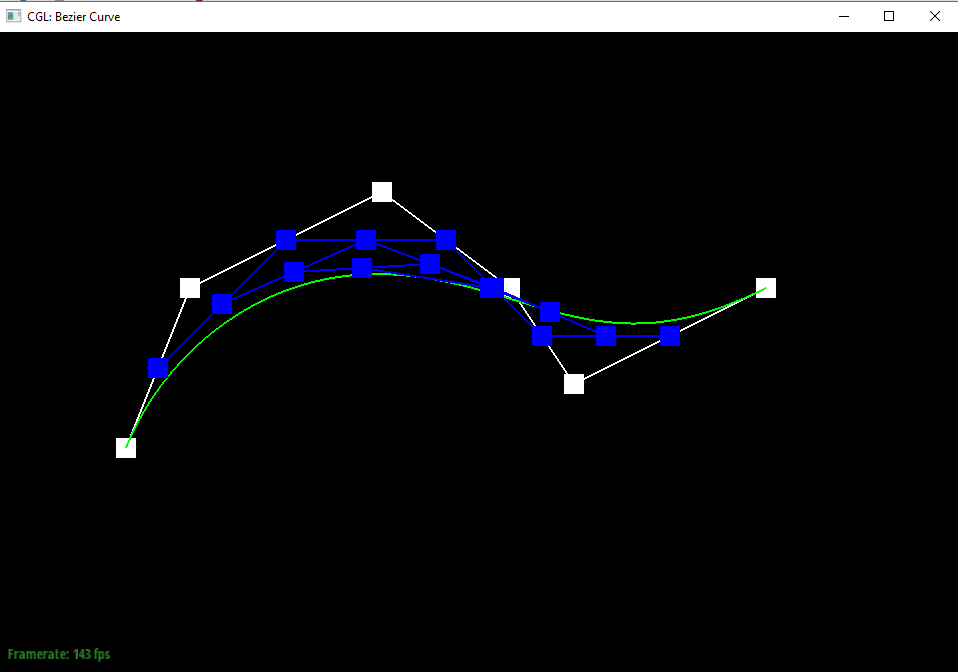
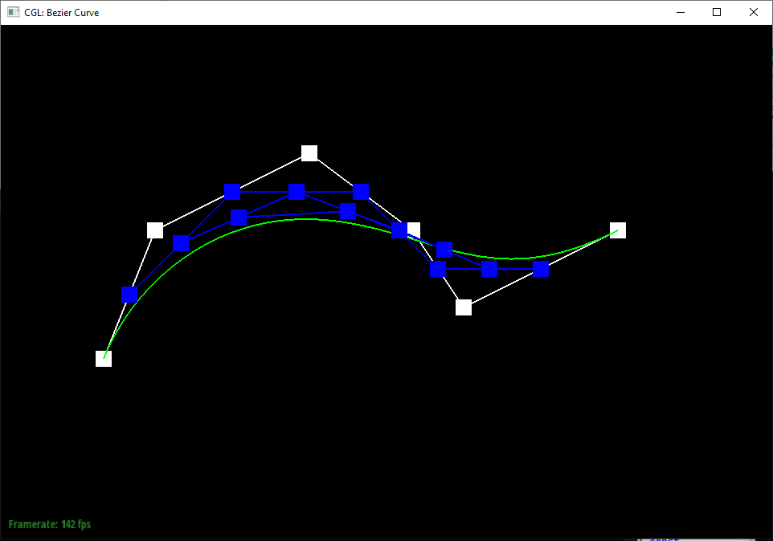
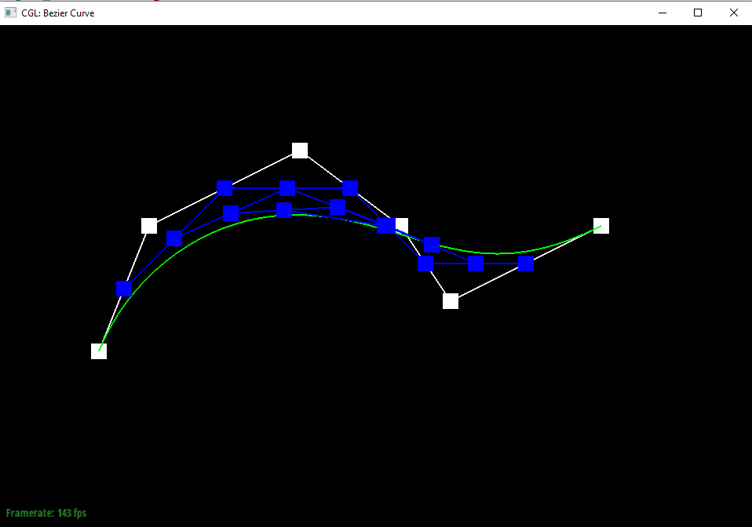
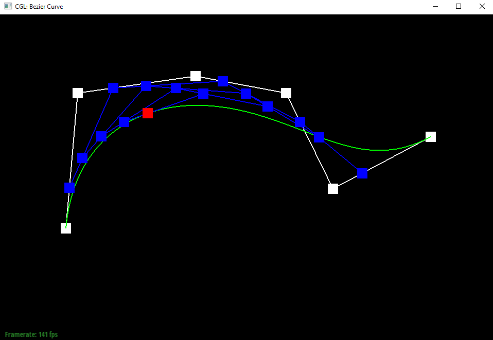
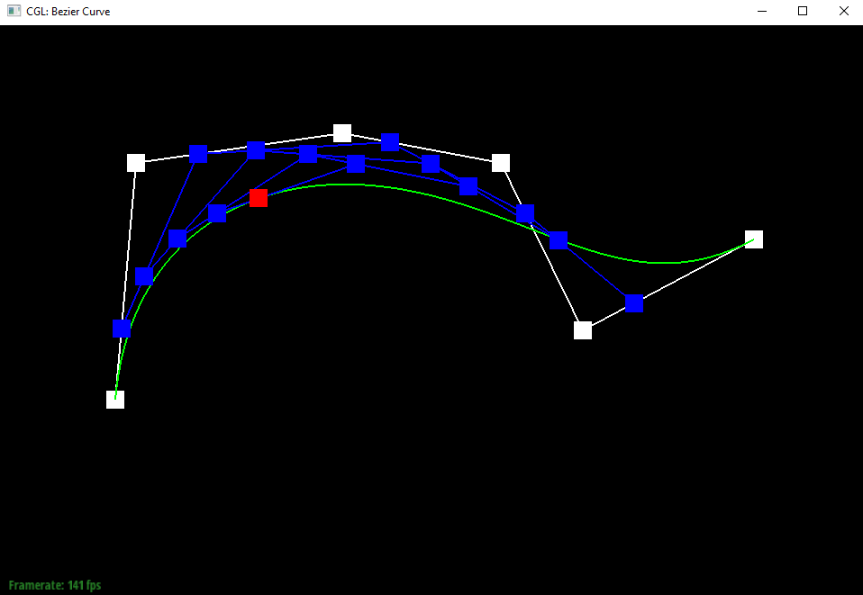

Overview:
Task 1:
The De Casteljau algorithm linearly interpolates the points between the points given as input to the algorithm. It continually repeats this process on the newly created
points. Once down to the final point, the algorithm has defined a point on the Bezier curve. I implemented the algorithm by multiplying the coordinates of the first of the pair
of coordinates by 1 - t and adding it to the coordinates of the second point multiplied by t.
 



 

Task 2:
Essentially, Bezier points along one axis can be grouped together along the other axis and linearly interpolated using the same algorithm to get points that
lie on the Bezier curves of both axes, providing a curve for the entire surface.
Task 3:
The area weighted vertex normals was calculated by taking the cross product of two of the edges in each of the attached faces of the vertex and summing them up.
The cross product provides the normal vector, and since we're using the edges of the triangle, their lengths are being accounted for in the cross product effectively
weighting the normals by the areas of the triangles.